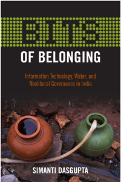

<body bgcolor="#FFFFFF" text="#000000" link="#0000FF" vlink="#CC0000" alink="#CC0000"><center><hr width="350" size="1" align="center" noshade>An ethnographic investigation of the class politics that underscore the emergence of neoliberalism in urban India<hr width="350" size="1" align="center" noshade><p><a href="https://cdcshoppingcart.uchicago.edu/Cart/ChicagoBook.aspx?ISBN=9781439912584&&PRESS=temple" target="_top">Buy this book!</a> | <a href="https://cdcshoppingcart.uchicago.edu/Cart/Cart.aspx?PRESS=temple" target="_top">View Cart</a> | <a href="https://cdcshoppingcart.uchicago.edu/Cart/Cart.aspx?PRESS=temple" target="_top">Check Out</a></p><p></p></center><!--none//--><h1>BITS of Belonging</h1>
<H2>Information Technology, Water, and Neoliberal Governance in India</H2>
<h3>Simanti Dasgupta</h3>
<P>cloth 1-4399-1258-0 $84.50, Oct 15, <FONT COLOR=#990033>Available</FONT>
<br>paper 1-4399-1259-9 $29.95, Oct 15, <FONT COLOR=#990033>Available</FONT>
<br>Electronic Book 1-4399-1260-2 $29.95 <FONT COLOR=#990033>Available</FONT>
<BR> 232 pp
6 x 9
</P><BLOCKQUOTE><I>"An engaging and important book that re-frames the widely studied field of IT in India in novel and interesting ways. Simanti Dasgupta offers new insights in her juxtaposition of IT and water distribution, and shows how neoliberal politics in India are deeply embedded in gender and caste hierarchies. Illuminative, </i>BITS of Belonging<i> deserves to be widely read."</i> <br>&#151<b>Banu Subramaniam</b>, University of Massachusetts, Amherst, and author of <i>Ghost Stories for Darwin: The Science of Variation and the Politics of Diversity</i></I></BLOCKQUOTE>
<P>India�s global success in the Information Technology industry has also prompted the growth of neoliberalism and the re-emergence of the middle class in contemporary urban areas, such as Bangalore. In her significant study, <I>BITS of Belonging</I>, Simanti Dasgupta shows that this economic shift produces new forms of social inequality while reinforcing older ones. She investigates this economic disparity by looking at IT and water privatization to explain how these otherwise unrelated domains correspond to our thinking about citizenship, governance, and belonging.
<P>Dasgupta�s ethnographic study shows how work and human processes in the IT industry intertwine to meet the market stipulations of the global economy. Meanwhile, in the recasting of water from a public good to a commodity, the middle class insists on a governance and citizenship model based upon market participation. Dasgupta provides a critical analysis of the grassroots activism involved in a contested water project where different classes lay their divergent claims to the city.
<BR>&nbsp;<h2>Excerpt</h2><P>Excerpt available at <a href="http://www.temple.edu/tempress">www.temple.edu/tempress</a></p>
<BR>&nbsp;<h2>Reviews</h2>
<p><i>"</i>BITS of Belonging<i> is a very timely and important book, with significant theoretical insights and compelling data. Its critique of the rhetoric of IT leaders and professionals in India is rigorous. Dasgupta provides an exploration of lived experience of the IT boom for those on the ground in the city of Bangalore. Her analysis moves fluidly back and forth from slums and governmental water boards, to affluent IT firms and corporate parks. With a geographer�s eye, she shows us firsthand the disconnect between these worlds�which are all affected by the IT boom�and it is extremely powerful."</i><br>&#151<b>Winifred Poster</b>, Washington University, St. Louis
<BR>&nbsp;<H2>About the Author(s)</H2>
<P><b>Simanti Dasgupta</b> is Associate Professor of Anthropology at the University of Dayton.</P>
<BR><H2>Subject Categories</H2>
<p><A HREF="/tempress/anthropology.html" TARGET="_top">Anthropology</a>
<BR><A HREF="/tempress/technology.html" TARGET="_top">Technology</a>
<BR><A HREF="/tempress/urban.html" TARGET="_top">Urban Studies</a>
</p>
<p align="center"><a href="https://cdcshoppingcart.uchicago.edu/Cart/ChicagoBook.aspx?ISBN=9781439912584&&PRESS=temple" target="_top">Buy this book!</a> | <a href="https://cdcshoppingcart.uchicago.edu/Cart/Cart.aspx?PRESS=temple" target="_top">View Cart</a> | <a href="https://cdcshoppingcart.uchicago.edu/Cart/Cart.aspx?PRESS=temple" target="_top">Check Out</a></p><p><font face="Arial" size="1"><a href="copyright.html" onMouseOver="window.status='Web Copyright Policy';return true;" onMouseOut="window.status=''" title="Web Copyright Policy">&copy;</a> 2015 <a href="http://www.temple.edu" target="new" onMouseOver="window.status='Link to Temple University home page';return true;" onMouseOut="window.status=''" title="Link to Temple University home page">Temple University</a>. All Rights Reserved. http://www.temple.edu/tempress/titles/2367_reg.html</font></p>